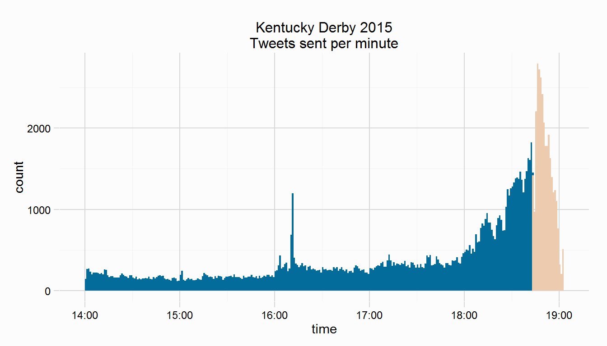
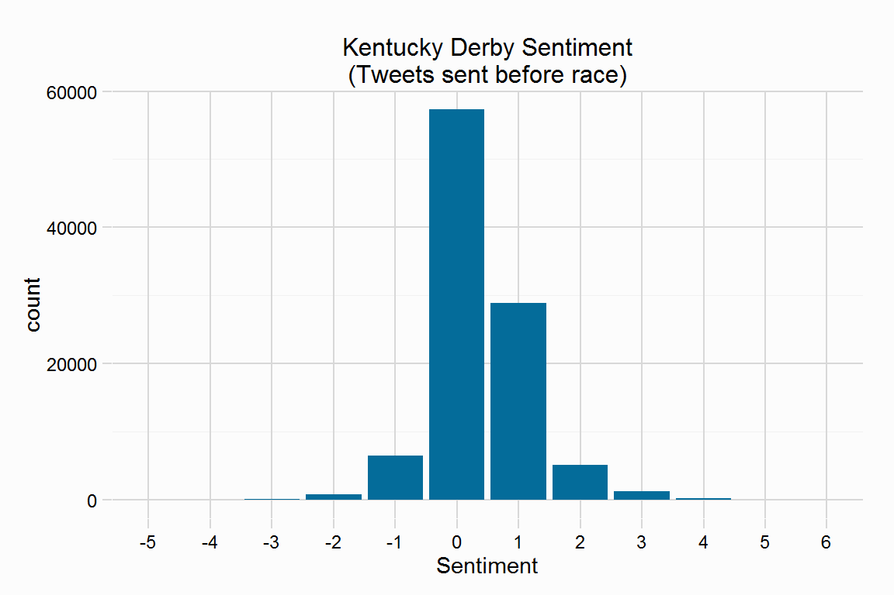
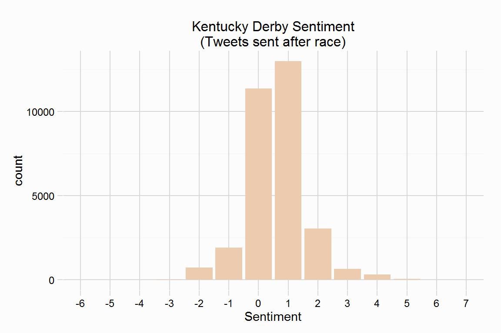
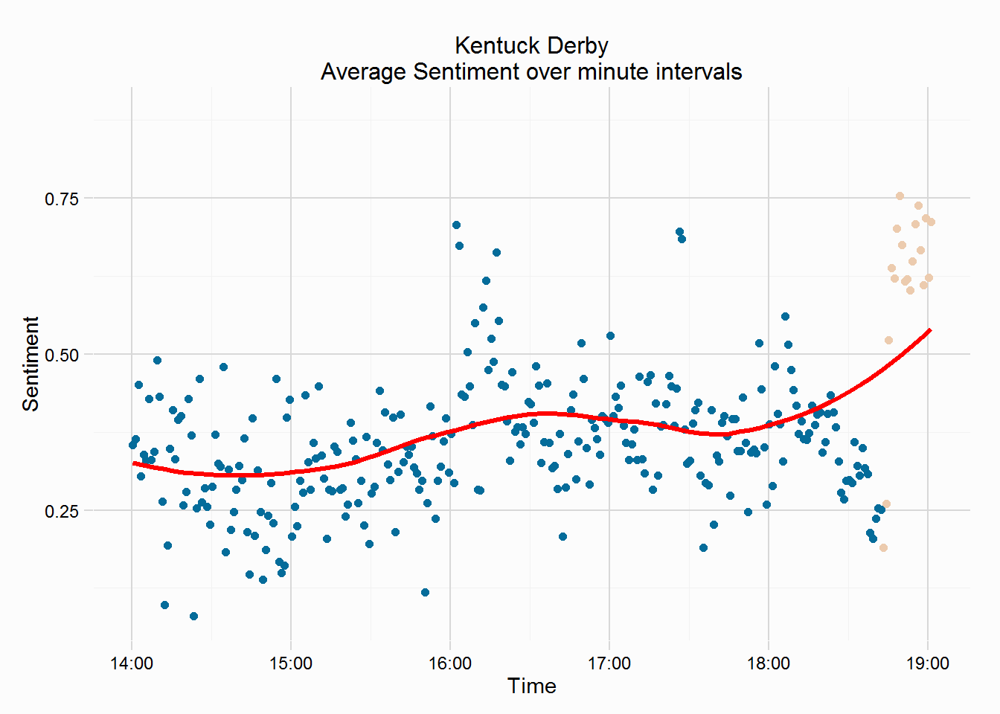
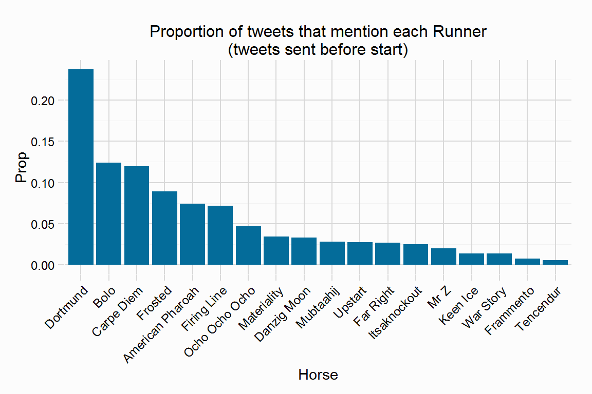
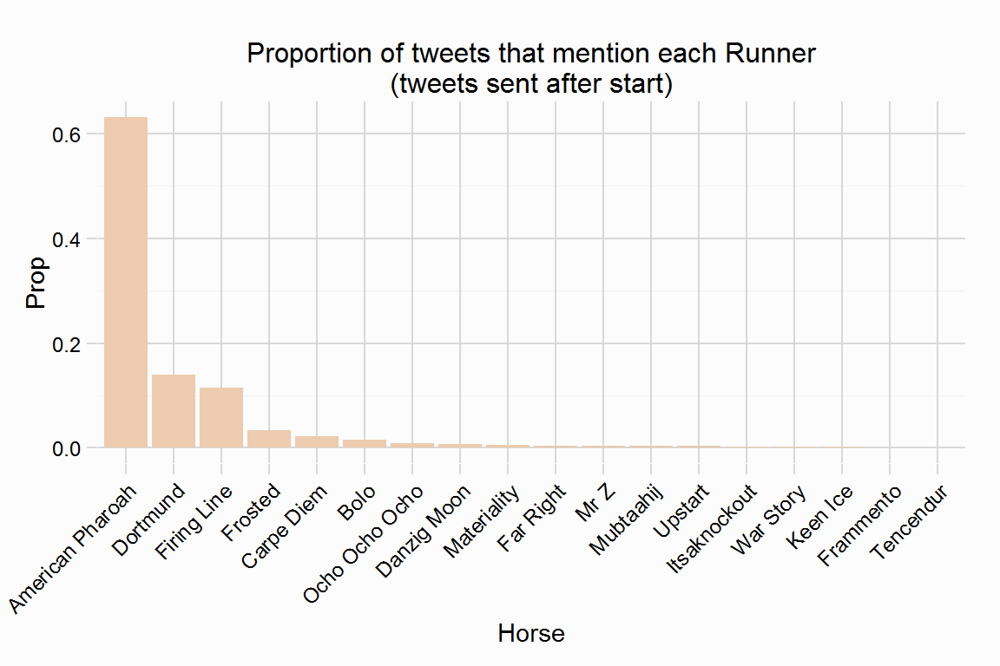

The Derby was run on Saturday 2nd May, and was contested by 18 3year old colts Tweets mentioning these runners were collected, as well as tweets mentioning “KYDerby” and “Kentucky Derby”. There were 131286 tweets collected, which is a huge number for an individual race, when I collected tweets on Day One of the Cheltenham Festival I collected ~100k tweets (for 4 races and 55 horses). The very popular hashtag #KYDerby and race name “Kentucky Derby” perhaps made collecting tweets easier than the Cheltenham Festival. Unfortunately the number of tweets caused the collection to end an hour earlier, and shortly after the race was completed.
The plot below shows the timeline of tweets sent. About 40minutes befoore the race started (which went off late) was when twitter activity started to ramp up, with over 1000 tweets sent per minute in the 15minutes before the race. This activity is very different to the UK twitter crowd seen at the Festival, where pre race chatter is pretty constant, with huge peaks post race (see here).
There is no doubt that the Derby is a huge Sporting event, but what is perhaps concerning for racing is these twitter users are likely not involved or tweeting about racing on the other 365days of the year.
The interactive plot below is created using the dygraphs R package which is used to display time-series data.

The sentiment of tweets can be gauged (see sentiment section) both before the race started and after the race. The plots below show the distributions, the average sentiment pre race was 0.353, while post race the average sentiment increased marginally to 0.61.
The plot that follows shows the sentiment over minute intervals. Sentiment is generally positive throughout the build up, there is jump in sentiment around 16:15, sentiment decreases just before the race started, possibly down to fans having to wait 2hours since the previous race, and the race to still go off late. However the post race sentiment takes a sharp rise, the same can be seen in the Cheltenham Festival twitter crowd, but



The two plots below show the proportion of tweets that mention each of the 18 Derby contenders, sent before the race started on the left, and after the race was completed on the right. The eventual winner, American Pharoah was the most 5th tweeted about horse, mentioned in 7.42% of tweets. However, with the four horses ahead of him, I am a little sceptical that they are talking about the contenders.
Post race, the focus was unsurprisingly on the winner, mentioned in 63.18% of tweets, with runner up Firing Line mentioned in 7.18%, and third horse mentioned in 23.74%.

